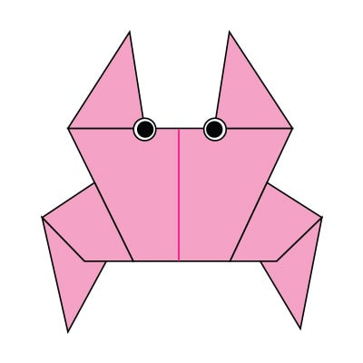
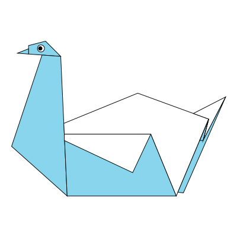

Step by Step diagrams are probably the most popular and easiet to follow way to show how to fold things out of paper.
Trying to find good origami instuctions on the Internet can be a lot of work though. To help your search we've put
together the largest database of free origami diagrams anywhere on the Internet. Just click on the image to view how to
fold it.

Click on the image above to learn how to fold the origami
Camels have three sets of eyelids and two rows of eyelashes to keep sand out of their eyes.
There are over 160 words for camel in Arabic alone.
When a camel finally does find water, he can drink up to 40 gallons in one go.

Click on the image above to learn how to fold the origami
There are around 160 species of chameleon.
The tongues of chameleons are two to three times longer than their bodies.
If a chameleon’s tail is cut off, it can’t grow back unlike other reptiles.

Click on the image above to learn how to fold the origami
They can find their way back to the nest from 1,300 miles away.
Pigeons have excellent hearing abilities.
A pigeon can live up to 6 years in the wild.

Click on the image above to learn how to fold the origami
The teddy was named after President Theodore Roosevelt, after he refused to shoot a bear during a 1902 hunting trip.
Early 20th century teddy bears were made from mohair, the hair of goats.
Bears have excellent senses of smell, sight and hearing.

Click on the image above to learn how to fold the origami
An adult panda can eat 12–38 kilos of bamboo per day.
Bamboo is critical to a panda's diet.
A panda's eyes are different to normal bears.

Click on the image above to learn how to fold the origami
There are around 3,000 cicada species, according to National Geographic.
Female cicadas can lay up to 400 eggs.
Cicadas can be black, brown or green and can have red, white or blue eyes.

Crab
The largest crab in the world is the giant Japanese Spider Crab, which can measure up to 13 feet across.
Crabs are decapods, meaning they have 10 legs.
You can find over 4,500 species of crabs around the world.

Swan
Swans can fly as fast as 60 miles per hour.
Swans are highly intelligent and remember who has been kind to them, or not.
A baby swan is called a cygnet.